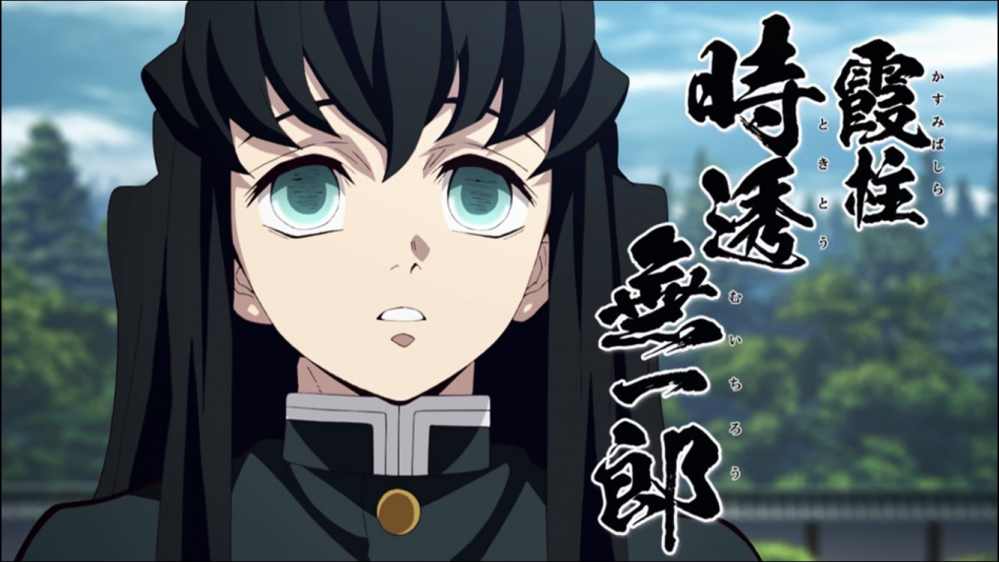

< 귀멸의 칼날의 등장인물.>
귀살대의 주 아홉명 중 한 명이며 이명은 하주(霞柱)이다. 바람의 호흡에서 파생된 안개의 호흡을 사용한다. 어린 나이에 주가 된 천재로 검을 잡은 지 불과 두 달 만에 주가 됐다고 한다. 이러한 명성과는 달리 평소에는 생기없는 눈을 하고 있으며 멍 때리고 딴 생각을 많이 하는 편이다. 그래도 주답게 나리에게 충성심이 강하고 싸울 때는 진중한 편이다. 본인의 꺽쇠 까마귀의 말로는 해의 호흡 사용자의 자손이라고 하며 이후 과거회상에서 우부야시키 가문의 인물들의 말을 들어보면 원래 토키토 가문이 해의 호흡을 계승하는 가문인 듯하지만 해의 호흡의 검사가 후계자를 남기지 않기로 결정했기 때문에 대가 끊긴 상황이었다. 작중에서 알 수 없는 이유로 과거의 기억이 없는데 대장장이 마을편에서 기억을 되찾기 전의 성격은 본인의 본래 성격보단 형의 성격에 더 가깝다. 현재 이유는 불명이나 우부야시키 카가야의 말에 따르면 그가 직접 잃게 했든 아니든 무이치로가 기억을 잃을 것은 알고 있었다.